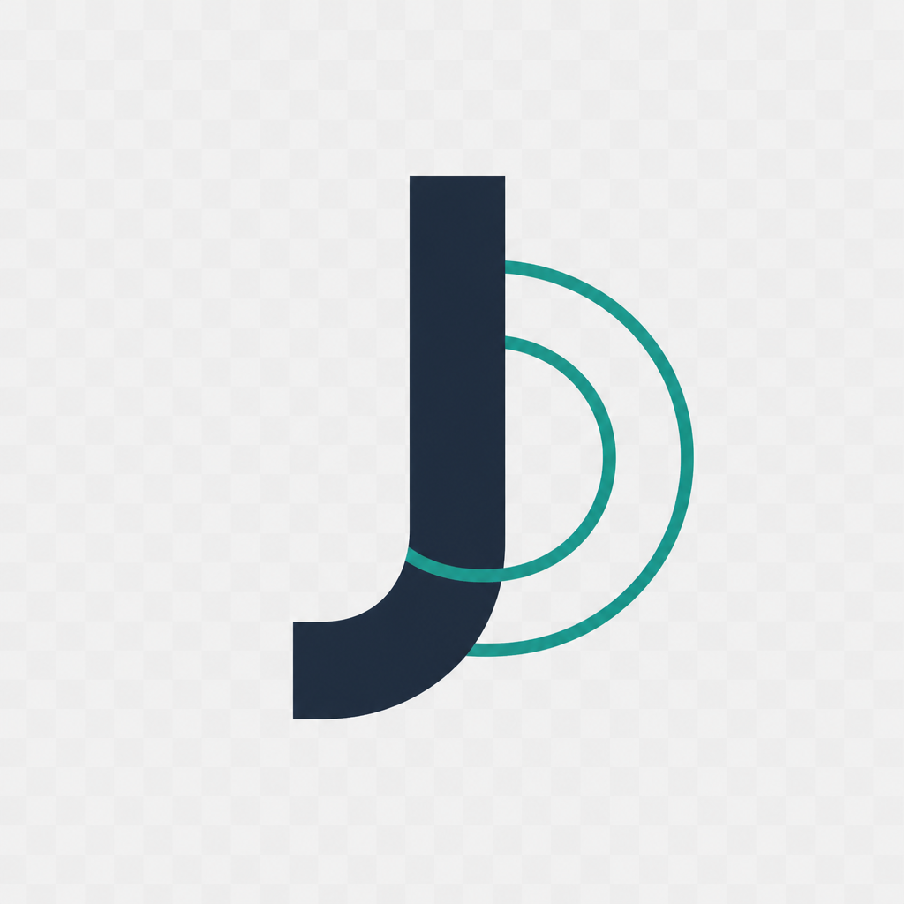

Jian11323 · Pages
这是 GitHub Pages 独立入口页，只放项目跳转。
正式站点、API 文档与在线服务仍在 sismotide.top / api.sismotide.top。
不与主站页面混合托管
本仓库源码 · 版权所有 © 2025 – 2026 Jian11323 / Jian Project

这是 GitHub Pages 独立入口页，只放项目跳转。
正式站点、API 文档与在线服务仍在 sismotide.top / api.sismotide.top。
不与主站页面混合托管
本仓库源码 · 版权所有 © 2025 – 2026 Jian11323 / Jian Project